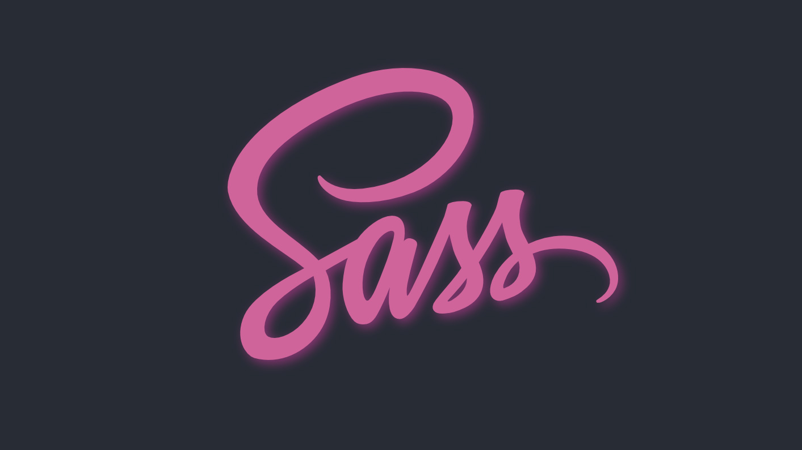

SASS
27.10.2020
Hva er Sass?
Sass (Syntactically Awesome Style Sheets) er en kraftig utvidelse av CSS, som legger til ekstra funksjoner som variabler, løkker og mer, til vanlig CSS. Sass bidrar til å gjøre kodingsprosessen raskere, mer effektiv og mer organisert sammenlignet med tradisjonell CSS. Noe som gjør at den vil være veldig nyttig på store prosjekter med mye CSS-kode.
Hvordan bruke Sass?
- Variabler
- Nesting
- Import
Variabler lar deg lagre informasjon som du kan bruke senere, slik at koden blir mindre repeterende. For eksempel kan du lagre en farge i en variabel ved å bruke $ symbol før variabelnavnet, som; $minspesiellefarge: verdi;
Sass lar deg neste CSS selectors for å redusere kodelinjer, det forstås best med et eksempel:
CSS kode:
nav ul {list-style: none;}
nav li {display: inline-block;}
nav a {text-decoration: none;}
SCSS kode:
nav {ul {list-style: none;} li {display: inline-block;} a {text-decoration: none;}}
Sass lar deg skille koden din i mindre filer som kalles partials og har slutten på _fil.scss. Deretter kan du importere partials-filene dine til en enkelt Sass-fil ved å bruke @import filnavn;